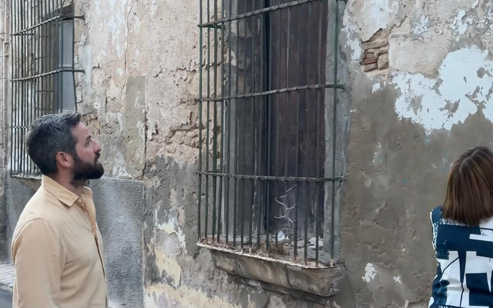
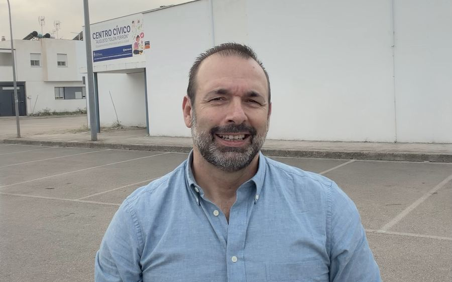
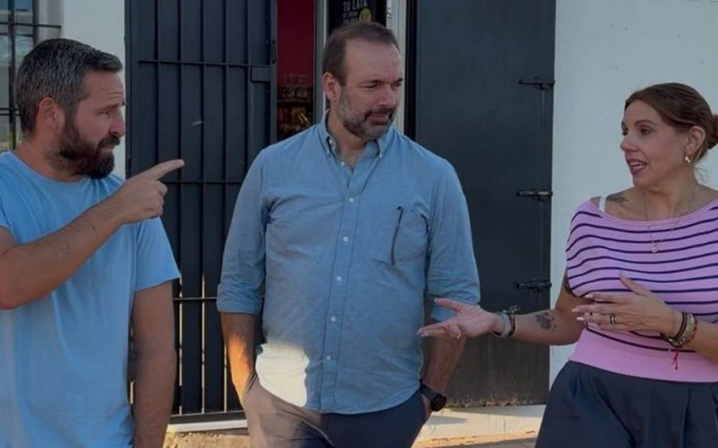

Un proyecto político hecho por y para los portuenses. Cercanía, sentido común y trabajo para devolverle a la ciudad el orgullo que merece.
El proyecto
100x100 Unidos Portuenses nace de una idea sencilla: que El Puerto pueda contar con un proyecto político propio, centrado en las necesidades de la ciudad y con capacidad para defender sus intereses allí donde se toman decisiones.
Nuestra filosofía
Creemos que la política municipal debe partir de las necesidades reales de cada municipio. Nuestra prioridad es El Puerto de Santa María y la mejora de la vida de sus vecinos, con independencia de las siglas y de las dinámicas de los partidos de ámbito estatal o autonómico.
Somos un proyecto independiente. No recibimos nuestra posición política de estructuras ajenas a El Puerto ni subordinamos los intereses de la ciudad a estrategias partidistas de otros ámbitos.
Nuestro proyecto reúne personas con experiencia en distintos ámbitos profesionales y en la administración municipal. Queremos poner ese conocimiento al servicio de la ciudad y afrontar los problemas de El Puerto desde la gestión y el trabajo cotidiano.
Entendemos la participación política como una responsabilidad al servicio de los vecinos. Por eso defendemos una forma de hacer política basada en la cercanía, la rendición de cuentas y la vinculación permanente con la sociedad portuense.
100x100 Unidos Portuenses forma parte de una red de proyectos municipalistas independientes de la provincia de Cádiz. Compartimos una misma forma de entender la política: cada proyecto conserva su autonomía, su independencia y la capacidad de defender sus propias ideas y prioridades, pero juntos podemos defender con mayor fuerza los intereses de nuestros municipios ante otras administraciones.
Nuestra prioridad es El Puerto y sus vecinos. Porque creemos que El Puerto merece más.
Lo que nos mueve
Nuestro compromiso empieza y termina aquí. Con nuestra ciudad, con sus barrios y con las personas que viven y trabajan en ella.
Menos etiquetas y menos ruido. Queremos centrarnos en lo que importa, buscar soluciones y hacer que el Ayuntamiento funcione.
Gobernar es decidir, gestionar y dar la cara. Sin excusas, con transparencia y asumiendo tanto los aciertos como los errores.
Actualidad

El Gobierno municipal tumba también la propuesta de crear una Mesa del Centro Histórico, rechazando dos iniciativas de 100x100 Unidos Portuenses para fomentar la participación ciudadana.
100x100 Unidos Portuenses lamenta que el Gobierno de Germán Beardo haya votado en contra de las dos propuestas presentadas al último Pleno para impulsar una Mesa Municipal de la Vivienda y una Mesa del Centro Histórico.
La primera iniciativa pretendía reunir a los grupos políticos, asociaciones vecinales, entidades sociales y profesionales del sector para compartir diagnósticos, plantear soluciones y hacer seguimiento de las actuaciones municipales en materia de vivienda. Una propuesta que contrasta con lo que ocurre en Jerez, también gobernado por el Partido Popular, donde la alcaldesa María José García-Pelayo ha impulsado recientemente una Mesa Local por la Vivienda.
“No entendemos que algo que el PP considera útil en Jerez aquí se rechace. La vivienda es una de las principales preocupaciones de los portuenses y creemos que no basta con los anuncios del alcalde. Hay que escuchar, compartir información y contar con quienes conocen de primera mano el problema”, señala Javier Botella.
La segunda propuesta planteaba crear una Mesa del Centro Histórico para dar voz a vecinos, comerciantes, asociaciones y profesionales, y abordar conjuntamente cuestiones como la rehabilitación, la conservación del patrimonio, la recuperación residencial y el comercio de proximidad.
Desde 100x100 Unidos Portuenses recuerdan que la participación ciudadana no es una concesión de ningún Gobierno. El artículo 69 de la Ley de Bases del Régimen Local establece que las corporaciones locales deben facilitar la participación de los ciudadanos en la vida municipal, mientras que su artículo 70 bis contempla la existencia de órganos y procedimientos adecuados para hacerla efectiva. En la misma línea, la Ley 7/2017 de Participación Ciudadana de Andalucía reconoce expresamente mecanismos como consejos, comisiones y mesas de debate.
“No pedíamos que el Gobierno aceptase todas las propuestas que pudieran surgir, sino que estuviera dispuesto a escuchar y a trabajar con los demás. El futuro de El Puerto no puede depender exclusivamente de los anuncios del Gobierno municipal. También necesita transparencia, diálogo y participación”, concluye Botella.

Francisco Belaustegui: “No basta con mantener las salas que tenemos; hay que planificar su ampliación y adaptarlas a las necesidades reales de los estudiantes”.
100x100 Unidos Portuenses llevará al próximo Pleno municipal una moción para impulsar la mejora y ampliación de los espacios públicos destinados al estudio y la formación en El Puerto de Santa María.
La iniciativa plantea ir más allá de las reivindicaciones relacionadas con los horarios y el funcionamiento de las salas de estudio que ya se abordaron en anteriores propuestas. En esta ocasión, el objetivo es analizar la capacidad real de las instalaciones municipales, conocer su nivel de ocupación y determinar si los recursos disponibles responden a las necesidades actuales de estudiantes y opositores.
La formación considera necesario contar con un diagnóstico actualizado que permita conocer el número efectivo de puestos, los horarios, los niveles de afluencia y la posible demanda que no está siendo atendida. A partir de esa información, propone estudiar la habilitación de nuevos espacios y evaluar posibles mejoras en los horarios, especialmente durante los periodos de exámenes.
El edil, Francisco Belaustegui, señala que “no podemos limitarnos a tener unas cuantas salas abiertas y dar por hecho que el servicio está cubierto. Hay que saber cuántas personas las utilizan, cuándo se quedan pequeñas y qué alternativas podemos ofrecer. La planificación debe hacerse pensando en los estudiantes y no simplemente en los recursos que tenemos actualmente”.
La moción también plantea ampliar el concepto de estos equipamientos municipales. La propuesta contempla estudiar una red de espacios de estudio y trabajo colaborativo que, además de puestos individuales, disponga de salas para trabajos en grupo, reuniones, conexión a internet, equipamiento informático y espacios para actividades formativas.
“Los jóvenes necesitan algo más que una mesa y una silla para estudiar. También necesitan lugares donde preparar trabajos en grupo, reunirse, formarse y desarrollar proyectos. Queremos que El Puerto avance hacia un modelo de espacios públicos más completo, contando con la opinión de los propios estudiantes, las asociaciones juveniles y los centros educativos”, añade Belaustegui.
Desde 100x100 Unidos Portuenses consideran que mejorar estos recursos supone invertir en formación, igualdad de oportunidades y futuro para la ciudad.

Montse Pecho: “No estamos pidiendo nada excepcional: los vecinos quieren limpieza, seguridad, mantenimiento y unos espacios públicos cuidados”.
Los integrantes de 100×100 Unidos Portuenses han visitado la zona de Vallealto-El Tomillar para conocer de primera mano las demandas y necesidades que plantean los vecinos.
Durante la visita se trasladaron distintas cuestiones relacionadas con la limpieza, la falta de contenedores, problemas de roedores e insectos, el estado de algunos acerados y alcorques, la conservación de las zonas verdes y la señalización y marcas viales de determinadas calles.
También se plantearon actuaciones concretas en el Parque del Soberano Poder y los jardines situados hasta la calle Aliso, así como en la plazoleta entre Araucaria y El Tomillar y en el espacio existente junto a la iglesia de San Sebastián.
“Los vecinos nos están hablando de cuestiones muy concretas y muy básicas. No estamos hablando de grandes obras ni de actuaciones extraordinarias, sino de mantener adecuadamente un barrio: limpiar, cuidar las zonas verdes, conservar los espacios públicos y mejorar la seguridad vial allí donde sea necesario”, señala Montse Pecho.
Durante el encuentro también se abordó el estado de los accesos a Vallealto-El Tomillar, especialmente en la Cañada del Verdugo y la carretera del Juncal, reclamando que se estudien las actuaciones que correspondan y se prioricen aquellas que presenten mayor urgencia.
“Lo que hemos hecho es escuchar a los vecinos y recoger sus demandas. Ahora toca ordenar esas necesidades y señalar cuáles son las actuaciones más urgentes para que puedan recibir una respuesta. Algunas son cuestiones de mantenimiento cotidiano que no deberían quedar en segundo plano”, concluye Pecho.
Únete al proyecto
Cada vecino suma, cada idea cuenta.